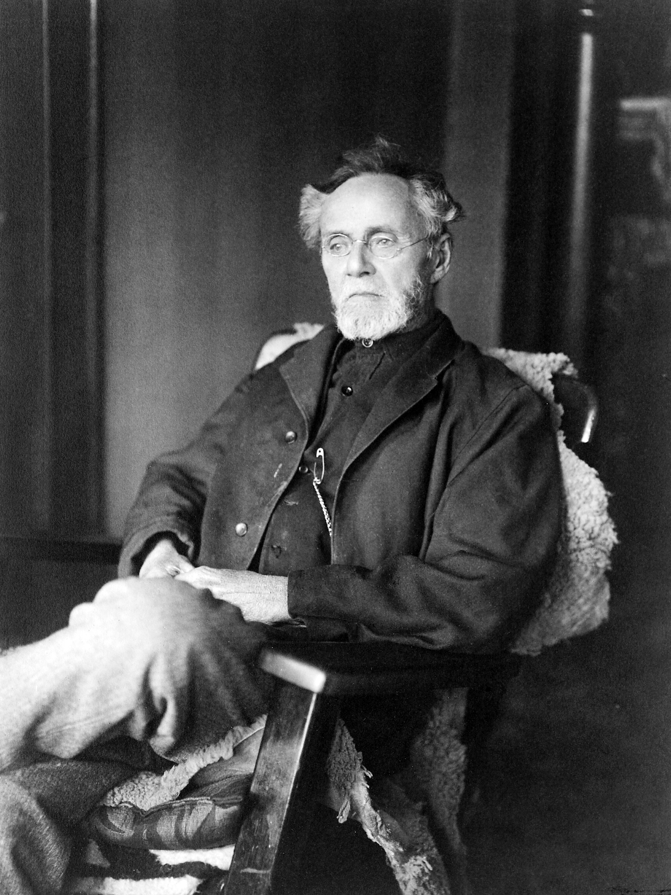
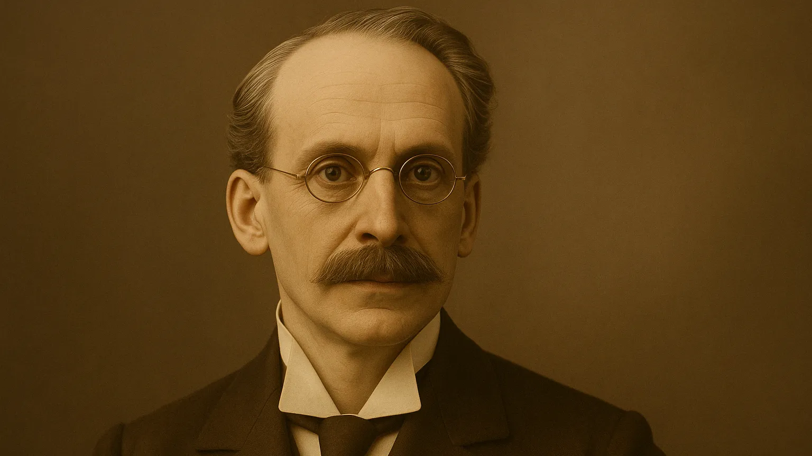

Història de l'Osteopatía
Origen
L'Osteopatía va néixer als Estats Units a finals del segle XIX de la mà del doctor Andrew Taylor Still
(1828-1917), metge i visionari que buscava una manera més respectuosa i global d'entendre la salut.
Després de viure la pèrdua de diversos fills per malalties que la medicina de l'època no va saber
tractar, Still va començar a qüestionar els mètodes convencionals i a investigar una nova forma de curar
basada en el coneixement profund de l'anatomia i la fisiologia.
El 1874, va formular els principis de l'Osteopatía, una disciplina que entén el cos com una unitat on
estructura i funció estan íntimament relacionades, i on el cos té la capacitat innata d'autocurar-se si
se li donen les condicions adequades. Still va fundar la primera escola d'Osteopatía el 1892 a
Kirksville, Missouri.
Amb el temps, l'Osteopatía es va estendre per Europa, especialment a França i al Regne Unit, on va
evolucionar i es va enriquir amb nous enfocaments com l'Osteopatía cranial, la visceral, la tisular i la
biodinàmica. Avui dia, és una disciplina reconeguda i practicada arreu del món, que combina ciència,
sensibilitat i escolta profunda del cos per ajudar les persones a recuperar el seu equilibri i benestar.

Altres contribuidors
John Martin Littlejohn (1865-1947)
Deixeble directe de Still, va ser fonamental per portar l'Osteopatía a Europa. Va fundar la British
School of Osteopathy a Londres i va ajudar a establir l'Osteopatía com una disciplina acadèmica i
reconeguda al Regne Unit. El seu enfocament integrador entre ciència mèdica i Osteopatía va marcar
un abans i un després.

William Garner Sutherland (1873-1954)
Considerat el pare de la Osteopatía craniosacral, va revolucionar la comprensió del moviment subtil
dels ossos del crani i la seva relació amb la salut global. El seu treball va obrir la porta a
tècniques molt fines i profundes, encara avui àmpliament utilitzades.
Harold Magoun (1907-1999)
Va ser un dels principals difusors de l'Osteopatía cranial. El seu llibre Osteopathy in the Cranial
Field és una obra de referència que va ajudar a formalitzar aquesta branca dins de la pràctica
osteopàtica.
Robert C. Ward (1908-1996)
Pioner en l'Osteopatía visceral, va explorar com les disfuncions dels òrgans interns poden influir en
l'estructura corporal i viceversa. Les seves aportacions van ampliar l'abast terapèutic de
l'Osteopatía.
Franklin Sills (1935-2020)
Un dels grans referents de la Osteopatía biodinàmica, va posar èmfasi en la presència terapèutica i
en la capacitat d'autoregulació del cos. Va ser clau en la difusió d'aquest enfocament més subtil i
profund arreu del món.
Rollin E. Becker (1910-1996)
Va ser deixeble directe de William Garner Sutherland, el creador de l'Osteopatía cranial, i va
aprofundir en la comprensió dels ritmes subtils del cos i la relació entre quietud, moviment i
salut. Becker va aportar una visió molt refinada i profunda de l'escolta dels teixits, i va posar
èmfasi en el concepte de “quietud dinàmica” com a espai des d'on emergeix la salut.
Els seus llibres més coneguts, The Stillness of Life i Life in Motion, recullen les seves reflexions
i experiències clíniques, i són considerats textos fonamentals per a osteòpates que treballen des
d'un enfocament biodinàmic.
Una de les seves frases més citades és: > “Només els teixits saben” Una expressió que resumeix la
seva confiança en la saviesa innata del cos i en la capacitat del terapeuta d'escoltar-la amb
respecte i presència.